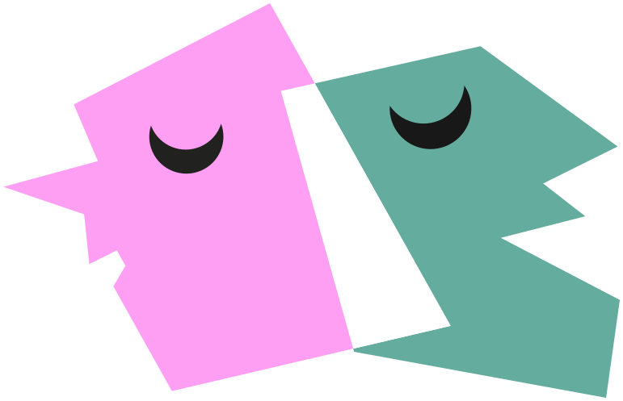

30 nov · 2026 · Córdoba Capital
Mapa de salas

Elegí una zona del mapa para ver sus salas y cómo llegar. Cada zona lleva el nombre de un grupo histórico del teatro cordobés.
Cargando mapa…
Tocá una zonaHacé clic en una zona
Este mapa necesita JavaScript.